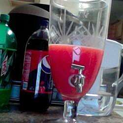

Fuzz Itialian Recipe

Ingredients
- 1 (1.5 fluid ounce) jigger grenadine syrup
- 2 (1.5 fluid ounce) jiggers peach schnapps
- 1 cup orange juice
- 2 fluid ounces carbonated water
Prepration
- Measure grenadine and peach schnapps into a glass of ice. Fill with orange juice to within 1 inch of the glass rim; top with carbonated water.
- Serve It.
Nutrition Facts
Per Serving: 581 calories; protein 1.8g; carbohydrates 103.4g; fat 0.8g; cholesterol 0mg; sodium 25.4mg. Full Nutrition